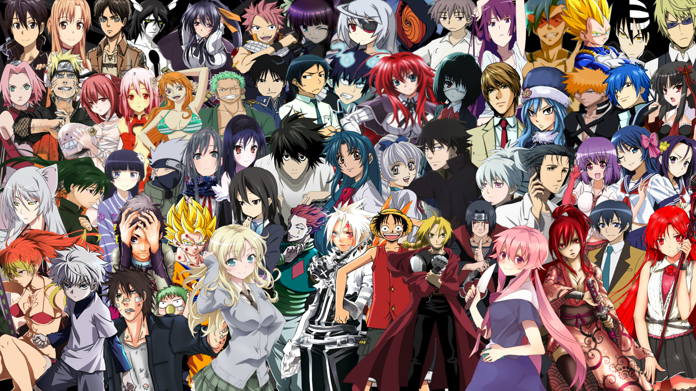
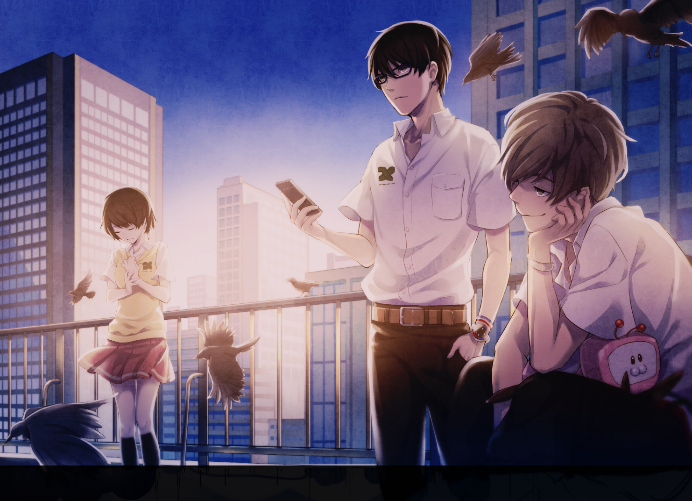
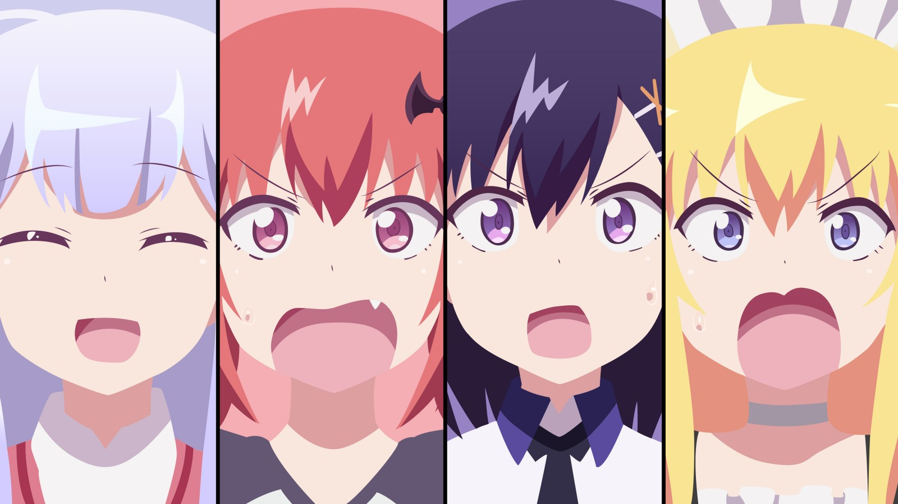
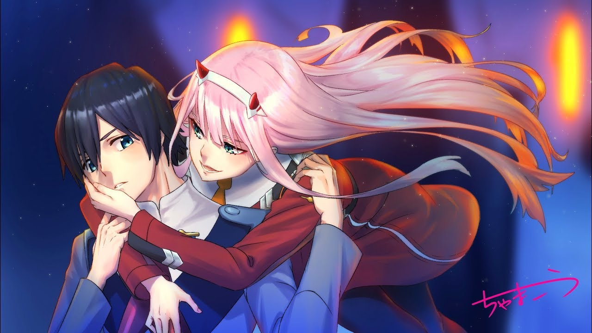
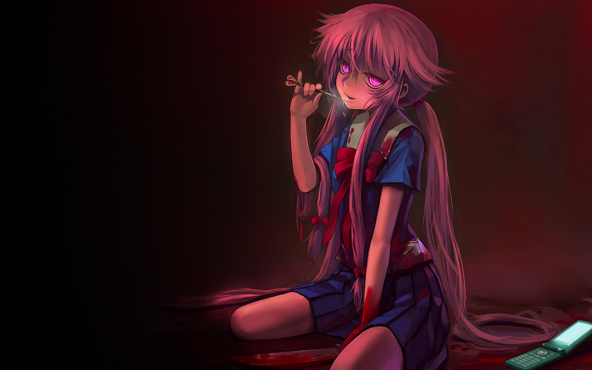
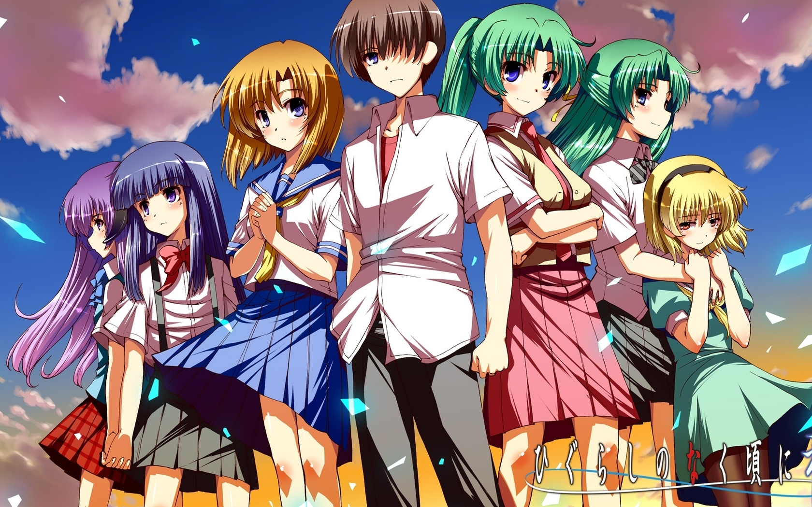

Аниме

Аниме - В отличие от мультфильмов других стран, предназначенных в основном для просмотра детьми, бо́льшая часть выпускаемого аниме рассчитана на подростковую и взрослую аудитории,
и во многом за счёт этого имеет высокую популярность в мире.
Аниме отличается характерной манерой отрисовки персонажей и фонов.
Издаётся в форме телевизионных сериалов, а также фильмов, распространяемых на видеоносителях или предназначенных для кинопоказа.
Сюжеты могут описывать множество персонажей, отличаться разнообразием мест и эпох, жанров и стилей.
Эхо террора

В один из летних деньков Токио содрогается от крупного террористического акта. За этим стоит некая организация, именуемая «Сфинкс» и появившаяся буквально из ниоткуда.
Вот только состоит эта организация всего из двух школьников, Арата Коконоэ «Девять» и Тоджи Хисами «Двенадцать», а также неожиданно присоединившейся к ним Лизы Мишимы.
Пока все ищут злодея, эта троица делает первый ход в игре, частью которой стало все население Японии. «В этом мире необходимо уметь спустить курок» — с этим девизом и начинается грандиозная «игра».
На главную
Лентяйка Габриэль

Сюжет расскажет об одной выдающейся ученице академии ангелов по имени Габриэль. После выпуска всех ангелов отправляют на Землю, чтобы они могли познать людскую жизнь.
Возложив большие надежды, руководство академии отправляет Габриэль на Землю для выполнения важной миссии. Однако по прибытии она очень удачно знакомится с видеоиграми.
Так удачно, что те постепенно затягивают её, в результате чего «надежда» становится абсолютно ленивой и не желающей ничего выполнять. Но в действительности ли всё останется именно так?
Изменит ли новый мир этого ангела? И сможет ли она выполнить возложенную на неё миссию по становлению человечества на путь истинный? Сможет ли Габриэль принести людям счастье?
На главную
Милый во франксе

Далёкое будущее. Земля в руинах, и на остатки человечества наводят ужас таинственные гигантские формы жизни, известные как кёрю — «ревущие драконы».
Чтобы противостоять им, люди создали передвижное фортификационное сооружение, названное Плантацией, где растут и обучаются юные пилоты роботов Франкс.
Единственная цель, ради которой живут эти дети, — уничтожение кёрю после прохождения специальной подготовки. Но чтобы управлять роботом — необходимо двое: мужчина и женщина,
«тычинка» и «пестик». И если один не справляется, статуса пилота лишаются оба, что и для того, и для другого значит ни много ни мало утратить смысл существования.
Хиро считали одарённым. До тех пор, пока он не провалился на экзамене вместе со своей напарницей. Птица, которая никогда не взлетит, — так чувствовал себя мальчик с того времени и даже не догадывался,
что скоро встретит человека с похожей судьбой...
«Убийца напарников», рогатая девчонка, в жилах которой течет кровь кёрю. «Станешь ли ты моим милым?» — спросила она не то шутки ради, не то всерьёз. И для Хиро вдруг снова нашлось место в мире...
На главную
Дневник будущего

Второй класс средней школы: у Юкитэру Амано вечные проблемы в общении со сверстниками, а потому, считая себя сторонним наблюдателем, он записывает всё, что видит, в дневник на мобильный.
Терзаемый одиночеством, Амано начинает выдумывать разные вещи, как, например, воображаемого друга по имени Деус Экс Машина, который несомненно является повелителем времени и пространства.
Глядя на плачевное состояние Юкитэру, Деус даёт ему новые способности — в его дневнике теперь появляются события, которые только должны произойти в ближайшем будущем, а записаны они с поразительной точностью.
Правда заключается в том, что такой мобильный «дневник будущего» есть не только у него одного, и теперь он вынужден участвовать в смертоносной игре, победитель которой станет преемником Деуса.
На главную
Когда плачут цикады

Переехав в провинциальную деревню Хинамидзава из-за проблем со школой в другом городе, Кэйити Маэбара счастливо проводит дни в компании школьных друзей, где оказывается единственным мальчиком.
Но беззаботная жизнь не длится вечно: в один злосчастный день Кэйити узнает о жестоком убийстве, произошедшем в городе. С этого момента он становится свидетелем,
а порой и участником нескончаемых ужасающих событий. Ему предстоит узнать, что школьные друзья вовсе не те люди, какими они кажутся на первый взгляд, а город Хинамидзава вовсе не тихое и уютное место,
каким оно выглядит для приезжих.
На главную